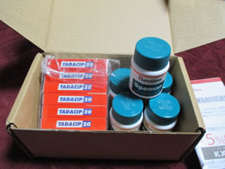

<?xml version="1.0" encoding="UTF-8"?><rss version="2.0"
	xmlns:content="http://purl.org/rss/1.0/modules/content/"
	xmlns:wfw="http://wellformedweb.org/CommentAPI/"
	xmlns:dc="http://purl.org/dc/elements/1.1/"
	xmlns:atom="http://www.w3.org/2005/Atom"
	xmlns:sy="http://purl.org/rss/1.0/modules/syndication/"
	xmlns:slash="http://purl.org/rss/1.0/modules/slash/"
	>

<channel>
	<title>PMS &#8211; くすりエクスプレスの教えてQ＆A</title>
	<atom:link href="https://www.kusuriexpress.com/qna/category/pms/feed/" rel="self" type="application/rss+xml" />
	<link>https://www.kusuriexpress.com/qna</link>
	<description>多くの方が気になる病気・症状の質問集</description>
	<lastBuildDate>Mon, 09 Jul 2018 01:47:48 +0000</lastBuildDate>
	<language>en-GB</language>
	<sy:updatePeriod>hourly</sy:updatePeriod>
	<sy:updateFrequency>1</sy:updateFrequency>
	<generator>https://wordpress.org/?v=4.7.5</generator>
	<item>
		<title>生理痛を軽くするにはどうしたらよいですか？</title>
		<link>https://www.kusuriexpress.com/qna/%e7%94%9f%e7%90%86%e7%97%9b%e3%82%92%e8%bb%bd%e3%81%8f%e3%81%99%e3%82%8b%e3%81%ab%e3%81%af/</link>
		<pubDate>Wed, 13 Jun 2018 07:13:05 +0000</pubDate>
		<dc:creator><![CDATA[くすりエクスプレス]]></dc:creator>
				<category><![CDATA[PMS]]></category>
		<category><![CDATA[生理]]></category>
		<category><![CDATA[生理痛]]></category>

		<guid isPermaLink="false">https://www.kusuriexpress.com/qna/?p=3547</guid>
		<description><![CDATA[生理痛を軽くするにはどうしたらよいですか? 厚生労働省の調査によると、生理の時にお腹に痛みを感じる人は67.3%もいます。腰痛も46.3%とかなり多く、36.3%の人が全身の倦怠感を感じています。... <span class="more">続きを読む</span>]]></description>
				<content:encoded><![CDATA[<h3>生理痛を軽くするにはどうしたらよいですか?</h3>
<p>厚生労働省の調査によると、生理の時にお腹に痛みを感じる人は67.3%もいます。腰痛も46.3%とかなり多く、36.3%の人が全身の倦怠感を感じています。</p>
<p>毎月強い生理痛があると、女性のQOL(生活の質)をいちじるしく下げることになります。生理痛について正しい知識をもって対処することが大切です。</p>
<h3>生理痛って何?</h3>
<p>女性は毎月卵巣から卵子を1個排卵し、子宮の中に受精した卵子が着床するベッドである子宮内膜を準備します。受精卵が着床しなかったとき、つまり妊娠しなかったときは、そのベッドをいったん排出して新たに作り直します。その排出のときに子宮が収縮して起きるのが生理痛（月経痛）です。</p>
<h3>生理痛の原因は?</h3>
<p>子宮に病気がある場合も生理痛が強くなりますが、多くの場合はホルモンの影響による生理的な痛みです。</p>
<p>生理中は経血と共に子宮内膜を排出するために、プロスタグランジンという子宮を収縮させるホルモンが分泌されます。このホルモンが多く分泌されると子宮が陣痛のときのように強く収縮し、強い痛みを感じることになります。</p>
<p>またプロスタグランジンには痛みを強める作用もあり、腰痛、や頭痛、吐き気の原因にもなります。</p>
<p>子どもを産んだ経験がない女性の場合は、子宮口が狭いことが生理痛の原因になることがあります。経血がスムーズに流れ出にくいのです。そのほかに冷え症やストレスなども生理痛を強める原因になると言われています。</p>
<h3>生理痛の原因になる病気とは?</h3>
<p>子宮内膜症、子宮筋腫、子宮腺筋症などの病気が生理痛の原因になっていることがあります。</p>
<p>・子宮内膜症<br />
子宮以外の場所に子宮内膜と同じような組織がつくられる病気です。この組織も生理のたびにはがれて出血するので、それにともなって強い痛みを感じます。</p>
<p>・子宮筋腫<br />
子宮にできる良性の腫瘍です。筋腫ができると生理痛の原因になるほか、経血が増えたり生理が長引くなどの症状が起きます。</p>
<p>・子宮腺筋症<br />
子宮の筋肉内に子宮内膜症でできるような組織ができる病気です。この病気になると経血が増えたり、生理が長引いたりします。</p>
<p>強い痛みを感じたり、ふつうの生理とは違う異常を感じたときはこのような病気が原因のことがあるので早めに婦人科で診察を受けましょう。</p>
<h3>ピルを飲むとなぜ生理痛が改善するの?</h3>
<p>避妊薬の低用量ピルは生理痛を軽くする効果もあります。これはピルに配合された女性ホルモンによって女性の身体のホルモンバランスが変化し、妊娠している状態に近くなるからです。それによって排卵が抑制され、毎月準備される子宮内膜が薄くなってプロスタグランジンの分泌がへり、経血の量も減ります。</p>
<p>この作用によってピルは子宮内膜症を予防する効果もあります。</p>
<p>日本では近年ピルが普及し始めていますが、まだ普及率は2％ほどで、女性の健康・生活の質を高めるピルが容易に薬局で購入できる欧米と比較すると、まだまだ発展途上と言えます。</p>
<h3>生理痛は鎮痛剤で治してもいいの?</h3>
<p>市販の鎮痛剤で痛みを抑えることもできますが、毎月使用していると聞きにくくなってくる場合があります。そういうときは、安易に服用回数や服用量を増やさないように注意しなければなりません。</p>
<p>鎮痛剤を飲みすぎると脳が痛みに過敏になり、痛みを強く感じ、痛む頻度も多くなります。 これが「薬物乱用頭痛」で、とくに頭痛薬の乱用で生じますが、生理痛でも気をつける必要があります。</p>
<p>鎮痛剤で生理痛に対処するよりも、低用量ピルを服用することで毎月の生理痛の緩和だけでなく、月経不順、月経過多、子宮内膜症、ニキビや肌荒れの予防効果も期待できます。</p>
]]></content:encoded>
			</item>
		<item>
		<title>知らないと損をする避妊ピルの二次的効果</title>
		<link>https://www.kusuriexpress.com/qna/%e7%9f%a5%e3%82%89%e3%81%aa%e3%81%84%e3%81%a8%e6%90%8d%e3%82%92%e3%81%99%e3%82%8b%e9%81%bf%e5%a6%8a%e3%83%94%e3%83%ab%e3%81%ae%e4%ba%8c%e6%ac%a1%e7%9a%84%e5%8a%b9%e6%9e%9c/</link>
		<pubDate>Mon, 19 Feb 2018 05:44:15 +0000</pubDate>
		<dc:creator><![CDATA[くすりエクスプレス]]></dc:creator>
				<category><![CDATA[PMS]]></category>
		<category><![CDATA[ピル]]></category>
		<category><![CDATA[生理・生理痛]]></category>
		<category><![CDATA[避妊]]></category>
		<category><![CDATA[低用量ピル]]></category>
		<category><![CDATA[生理]]></category>

		<guid isPermaLink="false">https://www.kusuriexpress.com/qna/?p=2555</guid>
		<description><![CDATA[経口避妊ピルには、副作用が少ない低用量ピルにも、卵胞ホルモン（エストロゲン）と黄体ホルモン（プロゲストーゲン）の2種類の女性ホルモンが配合されています。これらの女性ホルモンを少量ずつ補充することで女性の身体は妊娠しているときと似たホルモンバランスになり、(さらに)妊娠することがなくなるのです。 この安定したホルモンバランスによって避妊以外にも、次のような月経に関するトラブルや更年期障害などを改善する二次的効果があります。... <span class="more">続きを読む</span>]]></description>
				<content:encoded><![CDATA[<p>経口避妊ピルには、副作用が少ない<a href="../../../../categories/%E3%83%94%E3%83%AB%E3%83%BB%E3%82%A2%E3%83%95%E3%82%BF%E3%83%BC%E3%83%94%E3%83%AB/%E4%BD%8E%E7%94%A8%E9%87%8F%E3%83%94%E3%83%AB/index.html">低用量ピル</a>にも、卵胞ホルモン（エストロゲン）と黄体ホルモン（プロゲストーゲン）の2種類の女性ホルモンが配合されています。これらの女性ホルモンを少量ずつ補充することで女性の身体は妊娠しているときと似たホルモンバランスになり、(さらに)妊娠することがなくなるのです。</p>
<p>この安定したホルモンバランスによって避妊以外にも、次のような月経に関するトラブルや更年期障害などを改善する二次的効果があります。</p>
<h4>1. 月経に関するトラブルの改善</h4>
<p>経口避妊ピルによる疑似妊娠の効果で月経が軽くなります。それによって月経血が減るとともに生理不順も改善します。強い生理痛をともなう月経困難症も軽減します。手足の冷えや肩こりなどの身体症状の他に、イライラや怒りの発作、憂うつなどの精神症状をともなうPMS(月経前症候群)もピルの服用で改善します。</p>
<p>ピルの服用には避妊以外に次のような二次的な効果があります。</p>
<h4>2. 美容効果</h4>
<p>ピルの服用でホルモンバランスが安定すると、ニキビや吹き出物ができにくくなります。また、乾燥肌になりにくく、肌につやと張りが生まれます。男性ホルモンが多くムダ毛が多かった人も女性ホルモンの補充で症状が改善します。</p>
<h4>3. 更年期障害の軽減</h4>
<p>避妊ピルと更年期は関係ないようですが、閉経によって分泌が急激に低下する女性ホルモンを補うことで、更年期障害のさまざまな症状を軽減することができます。更年期障害は不定愁訴とも言われるように、心身のあらゆる面に症状が出る可能性があり、人によってその出かたが異なります。</p>
<p>いろいろな症状にそのつど対症療法をほどこしても大きな効果は期待できませんが、女性ホルモンを供給することで根本的な改善が期待できます。</p>
<h4>4. 骨粗しょう症、卵巣がんなどの予防</h4>
<p>ピルの長期服用によって閉経後に増加する骨粗しょう症、卵巣がん、子宮体がん、骨盤内感染症のリスクを軽減することができます。</p>
<p>日本では避妊ピルはドラッグストアでは購入できず、医師に処方してもらう必要があるせいもあり、欧米に比べると服用している女性の数はだんぜん少なくなっています。しかし、避妊を相手任せにせずにできるという点でも、健康上のメリットが多いという点でももっと活用されるべき薬だと言っても良いでしょう</p>
]]></content:encoded>
			</item>
		<item>
		<title>タダシップ、スぺマン体験談【60代男性】</title>
		<link>https://www.kusuriexpress.com/qna/%e3%82%bf%e3%83%80%e3%82%b7%e3%83%83%e3%83%97%e3%80%81%e3%82%b9%e3%81%ba%e3%83%9e%e3%83%b3%e4%bd%93%e9%a8%93%e8%ab%87%e3%80%9060%e4%bb%a3%e7%94%b7%e6%80%a7%e3%80%91/</link>
		<pubDate>Wed, 31 Jan 2018 07:58:26 +0000</pubDate>
		<dc:creator><![CDATA[くすりエクスプレス]]></dc:creator>
				<category><![CDATA[PMS]]></category>
		<category><![CDATA[ナイトライフ商品体験談！]]></category>
		<category><![CDATA[スぺマン]]></category>
		<category><![CDATA[タダシップ]]></category>
		<category><![CDATA[体験談]]></category>

		<guid isPermaLink="false">https://www.kusuriexpress.com/qna/?p=2132</guid>
		<description><![CDATA[これまで色々なED治療薬を試してみて、どれも男性機能を回復させるには充分な効果があると言うことが分かりました。特にジェネリックは安価に購入できて効果も変わらないので大いに助かっています。 私が興味を持ったのは、スペマンが精子の量を増やすという説明を見たことでした。... <span class="more">続きを読む</span>]]></description>
				<content:encoded><![CDATA[<figure style="width: 250px" class="wp-caption alignnone"><figcaption class="wp-caption-text">ご投稿写真</figcaption></figure>
<p>これまで色々な<a href="../../../../categories/night-life/ED%E6%B2%BB%E7%99%82%E8%96%AC/index.html">ED治療薬</a>を試してみて、どれも男性機能を回復させるには充分な効果があると言うことが分かりました。特にジェネリックは安価に購入できて効果も変わらないので大いに助かっています。</p>
<p>私が興味を持ったのは、スペマンが精子の量を増やすという説明を見たことでした。</p>
<p>今までは常にパートナーの中に射精させてもらっていたので、特に自分の精子の量を見ることもしなかったのですが、スペマンの記事の内容が気になったので、一度マスターベーションで確かめてみる事にしたのです。</p>
<p>結果、申し訳程度の量（漏れていたが正確）しか出ていなかったのを発見して愕然としました。</p>
<p>若い頃に自分でやってた時の勢いもなく、もっといっぱい出ているものと思い込んでいただけにショックはかなり大きかったのです。</p>
<p>快感も精子の量に比例するということであったので、勢いよく飛ぶとまではいかなくても、せめてもう少し量を増やしたいと思い、<a href="../../../../products/%E3%80%90%E3%83%92%E3%83%9E%E3%83%A9%E3%83%A4%E3%80%91%E3%82%B9%E3%83%9A%E3%83%9E%E3%83%B3%EF%BC%88%E7%B2%BE%E5%AD%90%E9%87%8F%E3%83%BB%E6%80%A7%E6%AC%B2%E3%82%A2%E3%83%83%E3%83%97%EF%BC%891%E7%AE%B1/index.html">スペマン</a>に期待し購入してみる事にしました。</p>
<p>さて、使用開始から約１ヶ月が経過して、セックスのたびに量をチェックしていますが、使用前に比べて量が少しづつ多くなってきていると感じます。それだけ射精の時間が長くなるということは快感時間も比例して長く続くので、男としては非常に嬉しいことです。</p>
<p>性欲は強いほうだと思いますが、以前より増していることも感じています。</p>
<p>当たり前にセックスができていたため、加齢による精子量の減少が我が身に起きているとは考えもしないことだったので一時は落ち込みかけましたが、今はサプリメントで回復が期待できる事にホッとしています。</p>
<p><a href="https://goo.gl/h5LFBS">タダシップ</a>だけでもパートナーとのセックスに満足していますが、スペマンは若い頃の射精した感覚を思い出させてくれるきっかけになり、本当に良かったと思っています。</p>
<p>ED適齢期のときにネットでくすりエキスプレスに出会い、以来充実したセックスライフを楽ませて頂いておりますが、何歳になっても男（オス♂）として現役でいられることは幸せな事と感謝しています。</p>
<p>これからもより良い商品を提供して下さることを期待しております。</p>
]]></content:encoded>
			</item>
		<item>
		<title>PMSの症状とされるのはどんな症状ですか？</title>
		<link>https://www.kusuriexpress.com/qna/pms%e3%81%ae%e7%97%87%e7%8a%b6%e3%81%a8%e3%81%95%e3%82%8c%e3%82%8b%e3%81%ae%e3%81%af%e3%81%a9%e3%82%93%e3%81%aa%e7%97%87%e7%8a%b6%e3%81%a7%e3%81%99%e3%81%8b%ef%bc%9f/</link>
		<pubDate>Fri, 30 Jun 2017 04:31:30 +0000</pubDate>
		<dc:creator><![CDATA[くすりエクスプレス]]></dc:creator>
				<category><![CDATA[PMS]]></category>
		<category><![CDATA[ピル]]></category>

		<guid isPermaLink="false">https://www.kusuriexpress.com/qna/?p=684</guid>
		<description><![CDATA[一般的にPMSの症状として現れるのがいくつもあります。 また体だけなく心の変化もあるのが特徴です。... <span class="more">続きを読む</span>]]></description>
				<content:encoded><![CDATA[<p>一般的にPMSの症状として現れるのがいくつもあります。</p>
<p>また体だけなく心の変化もあるのが特徴です。</p>
<p>体の変化では、お腹の張りや腹痛（下部）、頭痛や肩こり、胸の張りや痛み、動悸やのぼせ、貧血やめまい、微熱がでることもあります。</p>
<p>また、にきびや肌荒れ、皮膚のかゆみやむくみ、だるさや疲れやすさを感じて朝起きるのが辛く感じる方もいるでしょう。</p>
<p>無性に甘いものが食べたくなったり、アルコールに弱くなってしまいすぐに酔ってしまう方もいます。</p>
<p>また心の変化では、すぐにいらいらして攻撃的になって興奮してしまったり、その反対に精神的に不安定な状態が続き、気分の落ち込みや不安感、抑うつ感を感じてしまうこともあります。</p>
<p>無気力で集中力や記憶力が低下してしまい、放心状態になってしまう方もいれば、急に涙が止まらなくなったり何もないのに泣きたくなるなど、感情が制御できなくなることもあります。</p>
<p>このようなPMSの症状を経験しているのは女性の8割にもなるため、多くの女性がこれらの症状に悩んでいることになります。</p>
<p>PMSの原因は女性ホルモンのバランスの変化で、通常は<a href="../../../../products/%E3%83%88%E3%83%AA%E3%82%AD%E3%83%A5%E3%83%A9%E3%83%BC-1%E7%AE%B1(%E5%90%88%E8%A8%8821%E9%8C%A0)/index.html">低用量ピル</a>で安定します。</p>
]]></content:encoded>
			</item>
		<item>
		<title>生理前に色んな体調不良が起こってしまうんですが、どうして体調不良になってしまうんでしょうか？</title>
		<link>https://www.kusuriexpress.com/qna/%e7%94%9f%e7%90%86%e5%89%8d%e3%81%ab%e8%89%b2%e3%82%93%e3%81%aa%e4%bd%93%e8%aa%bf%e4%b8%8d%e8%89%af%e3%81%8c%e8%b5%b7%e3%81%93%e3%81%a3%e3%81%a6%e3%81%97%e3%81%be%e3%81%86%e3%82%93%e3%81%a7%e3%81%99/</link>
		<pubDate>Mon, 26 Jun 2017 02:49:19 +0000</pubDate>
		<dc:creator><![CDATA[くすりエクスプレス]]></dc:creator>
				<category><![CDATA[PMS]]></category>
		<category><![CDATA[女性ホルモン]]></category>
		<category><![CDATA[生理・生理痛]]></category>
		<category><![CDATA[避妊]]></category>

		<guid isPermaLink="false">https://www.kusuriexpress.com/qna/?p=587</guid>
		<description><![CDATA[個人差があると言われている生理前の体調不良ですが、様々な種類があります。 ・イライラしやすくなる... <span class="more">続きを読む</span>]]></description>
				<content:encoded><![CDATA[<p>個人差があると言われている生理前の体調不良ですが、様々な種類があります。</p>
<p><strong>・イライラしやすくなる</strong></p>
<p>生理前になるとイライラしてしまいやすいと言われていますが、これは生理前に起こる月経前症候群（PMS）が原因で起こるとされています。</p>
<p>PMSはプロゲステロンとエストロゲンが一気に変わることによって様々な不快症状が起こってしまいます。</p>
<p>対策としては「これはPMSだから仕方ない」と割り切り、ストレスを溜め込みすぎないことが大切です。</p>
<p>また、適度な運動や睡眠時間の確保、食生活など、生活習慣の見直しをすることもポイントとなります。</p>
<p><strong>・いつもより肌の調子が悪い</strong></p>
<p>いつもより肌の調子が悪いというのはプロゲステロンが増えることで皮脂分泌が多くなり、それが原因でニキビ・吹き出物などが増えてしまうためと言われています。</p>
<p><strong>ホルモンバランスの変化が原因のため、<a href="../../../../categories/%E3%83%94%E3%83%AB%E3%83%BB%E3%82%A2%E3%83%95%E3%82%BF%E3%83%BC%E3%83%94%E3%83%AB/index.html" target="_blank" rel="noopener noreferrer">低用量ピル</a>でPMSや月経痛などを改善する方法も一般的です。</strong></p>
<p>にきびや肌トラブルもピルで改善するという女性も多いですが、個人差もございます。</p>
<p>また、プロゲステロンは紫外線により敏感になってしまうため、シミやそばかすもできやすくなってしまうのです。</p>
<p>なるべく脂質の摂取量やカフェインのとりすぎには注意しましょう。</p>
<p><strong>・胸が張って痛い</strong></p>
<p>胸が張って痛みを感じる人もいます。</p>
<p>これはプロゲステロン増加によって乳腺が刺激されるため、胸が張ったり痛みを感じてしまうと言われています。</p>
<p>優しくマッサージをして血行を促進させたり、あまりバストを締め付けない下着を付けるようにすると、痛みが和らぎます。</p>
]]></content:encoded>
			</item>
		<item>
		<title>その症状はもしかして月経前症候群？</title>
		<link>https://www.kusuriexpress.com/qna/%e3%81%9d%e3%81%ae%e7%97%87%e7%8a%b6%e3%81%af%e3%82%82%e3%81%97%e3%81%8b%e3%81%97%e3%81%a6%e6%9c%88%e7%b5%8c%e5%89%8d%e7%97%87%e5%80%99%e7%be%a4%ef%bc%9f/</link>
		<pubDate>Mon, 19 Jun 2017 08:22:17 +0000</pubDate>
		<dc:creator><![CDATA[くすりエクスプレス]]></dc:creator>
				<category><![CDATA[PMS]]></category>
		<category><![CDATA[ピル]]></category>
		<category><![CDATA[低用量ピル]]></category>
		<category><![CDATA[月経]]></category>
		<category><![CDATA[月経前症候群]]></category>
		<category><![CDATA[経口避妊薬]]></category>

		<guid isPermaLink="false">https://www.kusuriexpress.com/qna/?p=492</guid>
		<description><![CDATA[その症状はもしかして月経前症候群? 生理痛などの月経困難症は月経がはじまると症状が出るのに対して、月経前症候群（PMS)は月経の1～2週間前に症状が出て、月経が始まるとおさまるのが特徴です。... <span class="more">続きを読む</span>]]></description>
				<content:encoded><![CDATA[<p><strong>その症状はもしかして月経前症候群?</strong></p>
<p>生理痛などの月経困難症は月経がはじまると症状が出るのに対して、月経前症候群（PMS)は月経の1～2週間前に症状が出て、月経が始まるとおさまるのが特徴です。</p>
<p>これはちょうど排卵後の黄体ホルモンの分泌が増える時期(黄体期)に当たっているので、月経前症候群にはこのホルモン変化が関係していると考えられています。</p>
<p><strong>月経前症候群の原因は?</strong></p>
<p>月経前に黄体ホルモンの分泌が増えると、次のような症状がでることがあります。</p>
<p>・身体の水分を排出する作用が弱まってむくみやすくなる<br />
・血糖値が下がりやすくなって、強い空腹感を感じたりイライラしたりする</p>
<p>またこのようなホルモンバランスの変化は自律神経の失調を招きやすく、それによって心身にさまざまな不快な症状が出ます。</p>
<p><strong>月経前症候群(PMS)の症状は?</strong></p>
<p>月経前症候群に特徴的な症状は</p>
<p>1. イライラ、感情の急激な変化<br />
2. 下腹部痛、頭痛、乳房の張りや痛み<br />
3. 体重増加、むくみ<br />
4. 異常に眠くなる<br />
5. 気分の落ちこみ、不安、集中力の欠如<br />
6. 肌荒れ、ニキビができるなどです。</p>
<p>その他に更年期障害に似た様々な自律神経失調症状がでることがあります。</p>
<p><strong>PMSが原因で起きる人間関係のトラブルとは?</strong></p>
<p>PMSの症状でとくに問題なのは、生理の前になると人が変わったように怒りっぽくなったり、涙もろくなるなど感情の変化が激しくなることです。周囲の人はこの突然の変化の理由がわからず、ときには深刻な人間関係のトラブルにつながることがあります。</p>
<p>PMSの中でもこのように大きな気分の動揺があり、社会生活にも影響を与える症状を、月経前気分不良障害（PMDD）といいます。</p>
<p>恋人には感情の変化がPMSであることを告げて理解を求めることがとても大切です。しかし会社の上司などには言いずらい問題なので、トラブルが深刻化しないように症状を改善する必要があります。</p>
<p><strong>低用量ピルでPMSを改善する</strong></p>
<p>経口避妊薬の<a href="../../../../categories/%E4%BD%8E%E7%94%A8%E9%87%8F%E3%83%94%E3%83%AB/index.html" target="_blank" rel="noopener noreferrer">低用量ピル</a>は、卵胞ホルモンと黄体ホルモンを毎日少しずつ摂取することで、生理周期によるホルモンバランスの変動を小さくして、PMSの症状を改善する効果があります。</p>
<p>その他低用量ピルには、生理痛の軽減、生理不順の改善などさまざまな副次的な効果があります。</p>
<p><strong>PMSを軽くする日常生活での注意</strong></p>
<p>女性は生理前の突然の心や身体の変化が月経前症候群だと理解することで、ある程度安心することができます。原因が分らないことによる不安が取り除かれるからです。そのうえで、日常生活の次のような注意でも症状を軽減することが可能です。</p>
<p>[食生活]</p>
<p>・糖分を控えめにして、バランスの良い食事をとる。<br />
・むくみやすい時期なので塩分をひかえる。<br />
・イライラを防ぐためにカフェインをひかえる。<br />
・気分の変動を大きくしないためにお酒を飲まない。</p>
<p>[ストレス解消]</p>
<p>・2日に1回くらいウォーキングなどの有酸素運動をする。<br />
・無理な仕事のスケジュールをたてない。<br />
・規則正しい生活をする。<br />
・アロマセラピーを活用するなどで、できるだけ気分をリラックスさせる。</p>
<p>また、月経前は注意力が低下することがあるので仕事でケアレスミスが増える傾向があります。それを自覚してチェックすることでミスの発生を予防することができます。</p>
<p>気分が変わりやすいことを自覚して、感情を制御することも大切です。</p>
]]></content:encoded>
			</item>
		<item>
		<title>女性特有のイライラの原因と対策！</title>
		<link>https://www.kusuriexpress.com/qna/%e5%a5%b3%e6%80%a7%e7%89%b9%e6%9c%89%e3%81%ae%e3%82%a4%e3%83%a9%e3%82%a4%e3%83%a9%e3%81%ae%e5%8e%9f%e5%9b%a0%e3%81%a8%e5%af%be%e7%ad%96%ef%bc%81/</link>
		<pubDate>Mon, 19 Jun 2017 07:50:49 +0000</pubDate>
		<dc:creator><![CDATA[くすりエクスプレス]]></dc:creator>
				<category><![CDATA[PMS]]></category>
		<category><![CDATA[イライラ]]></category>
		<category><![CDATA[ピル]]></category>
		<category><![CDATA[低用量ピル]]></category>
		<category><![CDATA[月経前症候群]]></category>
		<category><![CDATA[経口避妊ピル]]></category>

		<guid isPermaLink="false">https://www.kusuriexpress.com/qna/?p=490</guid>
		<description><![CDATA[PMS月経前症候群とは? 女性のイライラが月経に関係があるのは昔から経験的に知られていました。会社でお局的な女性がイラついて当り散らしていたりすると「生理前なんだろう」と陰口を言われたものです。このような症状は最近はPMS(月経前症候群)と呼ばれています。... <span class="more">続きを読む</span>]]></description>
				<content:encoded><![CDATA[<p><strong>PMS月経前症候群とは?</strong></p>
<p>女性のイライラが月経に関係があるのは昔から経験的に知られていました。会社でお局的な女性がイラついて当り散らしていたりすると「生理前なんだろう」と陰口を言われたものです。このような症状は最近はPMS(月経前症候群)と呼ばれています。</p>
<p>PMSは月経が始まる1~2週間前からでる、イライラ、下腹部痛、頭痛、眠気などのさまざまな不快な症状のことです。これらの症状は月経が始まると消えるのが特徴です。女性の4割が月経前にはつねに何らかの不快な症状があり、ときどきあるという人を加えると9割を超えるといいます。</p>
<p>月経前症候群の中で、夫や恋人、会社の同僚など本人以外に影響を及ぼすのが、イライラや攻撃的な言動です。場合によっては人間関係を決定的に壊したり、会社を辞めることになったなどのケースもあります。</p>
<p>分っていてもどうにもならないのがPMSによる感情の動きですが、次のような対策で最悪の事態を防ぐことができます。</p>
<p>1. 生理周期を把握して、「気分予報」をたてる<br />
基礎体温をつけて排卵日や生理の開始日と、イライラの症状が出やすい日を把握しておくことが大切です。いきなり台風に襲われるよりは天気予報でその襲来を知っておいた方がよいのと同じで、そろそろ来るなということが分れば人間関係を壊すような「事故」も防ぎやすくなります。</p>
<p>2. 仕事のスケジュールを調整する<br />
生理前には仕事をしませんというわけにはいきませんが、集中力が要求されるような仕事は意識的にその前に片づけるとか、その後に回すとかの調整は可能なはずです。「そんなこと言ってられない」などとムリをするのは、症状を悪化させるだけでなく、結局仕事の質も良くなりません。</p>
<p>季節の変わり目などでとくにPMSが重くなりそうな月があれば、それに合わせて有給休暇をとるのも1つの手です。</p>
<p>3. 自己判断で落ち込まないで婦人科を受診する<br />
PMSにいろいろな症状があるだけでなく、非定型うつ病などPMSと似た症状がある病気もあり、実際には自己判断が難しい場合が多いものです。また、イライラしたり攻撃的になる症状を自分の性格の悪さだと思って落ちこんでいる女性も少なくありません。 そんなときは思い切って婦人科を受診することをおすすめします。病名が分ること自体が安心感を生んでくれます。</p>
<p>4. <a href="../../../../categories/%E4%BD%8E%E7%94%A8%E9%87%8F%E3%83%94%E3%83%AB/index.html" target="_blank">低用量ピル</a>を服用する<br />
経口避妊ピルは避妊という本来の目的以外に、女性ホルモンを補給することでホルモンバランスの変化を小さくしPMSを軽減する効果があります。</p>
<p><strong>男性にもPMSの知識が必要</strong></p>
<p>妻や恋人がパートナーを傷つけるようなことを言っても、病気のせいと分かればけっていてきな破局は防ぐことができます。恋人ならその期間はデートを避けるのも1つの対策です。君子危うきに近寄らずです。</p>
]]></content:encoded>
			</item>
		<item>
		<title>PMSが辛くて仕事に集中できません。どう乗り切れば良いでしょうか？</title>
		<link>https://www.kusuriexpress.com/qna/pms%e3%81%8c%e8%be%9b%e3%81%8f%e3%81%a6%e4%bb%95%e4%ba%8b%e3%81%ab%e9%9b%86%e4%b8%ad%e3%81%a7%e3%81%8d%e3%81%be%e3%81%9b%e3%82%93%e3%80%82%e3%81%a9%e3%81%86%e4%b9%97%e3%82%8a%e5%88%87%e3%82%8c/</link>
		<pubDate>Mon, 12 Jun 2017 07:44:45 +0000</pubDate>
		<dc:creator><![CDATA[くすりエクスプレス]]></dc:creator>
				<category><![CDATA[PMS]]></category>
		<category><![CDATA[ピル]]></category>

		<guid isPermaLink="false">http://qna.kusuriexpress.com/?p=301</guid>
		<description><![CDATA[PMSと上手く付き合っていくためにオススメなのが、月経周期を把握して、どの時期に症状が出やすくなるのか事前に理解しておくことです。 スケジュール帳で記録を付けてもいいですが、最近は月経日を入力することで、次の月経日や排卵日を予測してくれる便利なアプリもあります。... <span class="more">続きを読む</span>]]></description>
				<content:encoded><![CDATA[<p>PMSと上手く付き合っていくためにオススメなのが、月経周期を把握して、どの時期に症状が出やすくなるのか事前に理解しておくことです。</p>
<p>スケジュール帳で記録を付けてもいいですが、最近は月経日を入力することで、次の月経日や排卵日を予測してくれる便利なアプリもあります。</p>
<p>そのようなものを活用して、PMSの症状が辛くなる時期が前もってわかっていれば、気持ちも楽になることでしょう。</p>
<p>また、どうしても症状が辛い時には、無理して仕事を続けずに市販薬やピルの使用が検討できます。</p>
<p><strong>PMSの根本原因を改善するために婦人科では<a href="../../../../categories/%E3%83%94%E3%83%AB%E3%83%BB%E3%82%A2%E3%83%95%E3%82%BF%E3%83%BC%E3%83%94%E3%83%AB/%E4%BD%8E%E7%94%A8%E9%87%8F%E3%83%94%E3%83%AB/index.html" target="_blank" rel="noopener noreferrer">低用量ピル</a>が処方されますので、<a href="../../../../products/%E3%83%88%E3%83%AA%E3%82%AD%E3%83%A5%E3%83%A9%E3%83%BC-1%E7%AE%B1(%E5%90%88%E8%A8%8821%E9%8C%A0)/index.html">トリキュラー</a>、<a href="../../../../products/%E3%83%8E%E3%83%99%E3%83%AD%E3%83%B3-1%E7%AE%B1(%E5%90%88%E8%A8%8821%E9%8C%A0)/index.html">マーベロン</a>、<a href="../../../../products/%E3%83%A4%E3%82%B9%E3%83%9F%E3%83%B3-1%E7%AE%B1(%E5%90%88%E8%A8%8821%E9%8C%A0)/index.html">ヤーズ</a>などピルの使用も検討できるでしょう。</strong></p>
<p>PMSはストレスの改善や食生活でも症状が軽くなりますが、我慢は身体によくありません。</p>
<p>近くの薬局やドラッグストアにあるような市販薬でも、PMSの症状にも効くものがあるので、上手に活用することがオススメです。</p>
<p>PMSの症状が出やすい時期を理解し、食生活やストレスに気を配りながら、仕事を乗り切れるようにしていくようにしましょう。</p>
<p>どうしても辛いときは我慢せず、市販薬を使用したり、医療機関を受診するようにしましょう。仕事をするうえで、PMSの症状は辛いものです。</p>
<p>少しでも症状が軽くなるような対策を取っておくと良いでしょう。</p>
<p><a href="../../../../categories/%E3%83%94%E3%83%AB%E3%83%BB%E3%82%A2%E3%83%95%E3%82%BF%E3%83%BC%E3%83%94%E3%83%AB/%E4%BD%8E%E7%94%A8%E9%87%8F%E3%83%94%E3%83%AB/index.html"></a></p>
]]></content:encoded>
			</item>
		<item>
		<title>PMSって年齢によって症状が違うんですか？</title>
		<link>https://www.kusuriexpress.com/qna/pms%e3%81%a3%e3%81%a6%e5%b9%b4%e9%bd%a2%e3%81%ab%e3%82%88%e3%81%a3%e3%81%a6%e7%97%87%e7%8a%b6%e3%81%8c%e9%81%95%e3%81%86%e3%82%93%e3%81%a7%e3%81%99%e3%81%8b%ef%bc%9f/</link>
		<pubDate>Tue, 06 Jun 2017 01:49:00 +0000</pubDate>
		<dc:creator><![CDATA[くすりエクスプレス]]></dc:creator>
				<category><![CDATA[PMS]]></category>
		<category><![CDATA[ピル]]></category>
		<category><![CDATA[生理]]></category>

		<guid isPermaLink="false">http://qna.kusuriexpress.com/?p=242</guid>
		<description><![CDATA[PMSは、年齢と言うよりも環境の変化によって変わってくると言われています。 年齢によって症状が異なる場合もあるようですが、個人差が大きいのが実情です。... <span class="more">続きを読む</span>]]></description>
				<content:encoded><![CDATA[<p>PMSは、年齢と言うよりも環境の変化によって変わってくると言われています。</p>
<p>年齢によって症状が異なる場合もあるようですが、個人差が大きいのが実情です。</p>
<p>PMSは30代の方の症状が重いと言われていますが、30代は仕事の昇進や結婚、出産など、人生のイベントが重なる世代でもあります。</p>
<p>生活環境が変わり、気付かないうちにストレスが大きくなっていくとPMSの症状の悪化に繋がってしまうのです。</p>
<p>特に出産後は、身体を休ませる間もなく育児に追われるので、イライラしたりストレスを抱え込みやすくなるので注意が必要です。</p>
<p>PMSの症状を少しでも軽くするためには、なるべくストレスを溜めないようにすることはもちろんのこと、規則的な食生活を心掛けることが大切です。</p>
<p>PMSはストレスが原因と言っても過言ではありません。</p>
<p>できるだけストレスを溜めないように趣味を楽しんだり、ちょっとした運動で身体を動かすようにしたりと、工夫することが大事となります。</p>
<p>また、不規則な食生活もPMS症状悪化に繋がります。</p>
<p>様々な食品を取り入れたり、バランス良く食事をすることで、少しずつ症状が改善していくでしょう。</p>
<p>婦人科でのPMSの緩和には<a href="../../../../categories/%E4%BD%8E%E7%94%A8%E9%87%8F%E3%83%94%E3%83%AB/index.html" target="_blank" rel="noopener noreferrer">低用量ピル</a>が一般的に用いられます。</p>
]]></content:encoded>
			</item>
	</channel>
</rss>

<!-- Localized -->